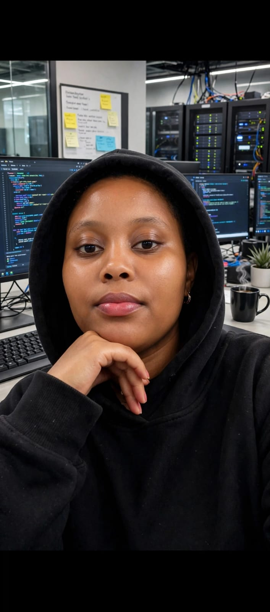
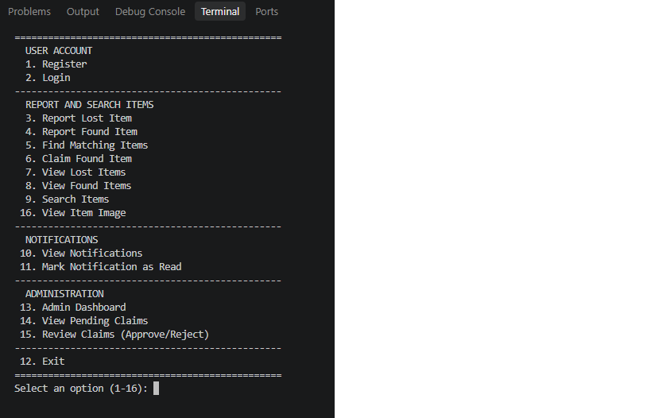
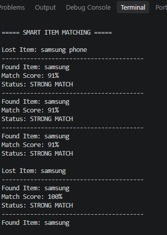
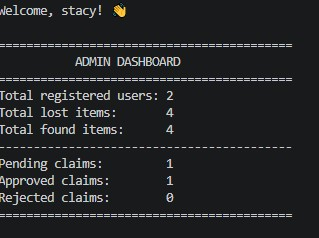
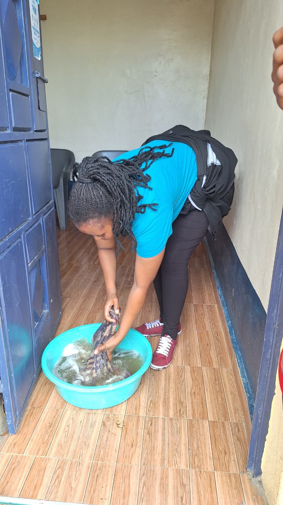
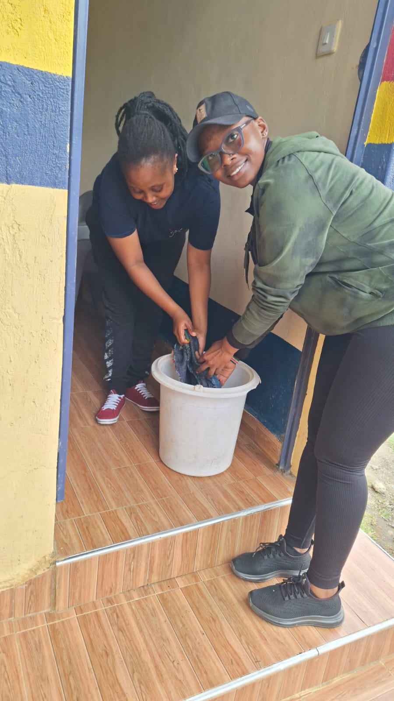
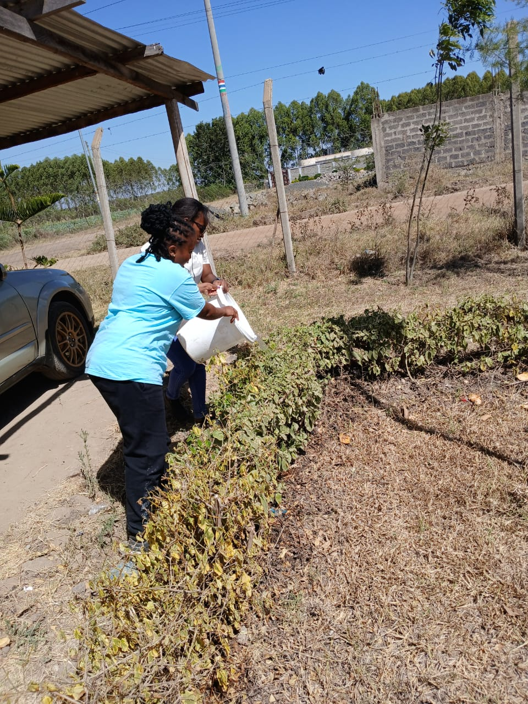
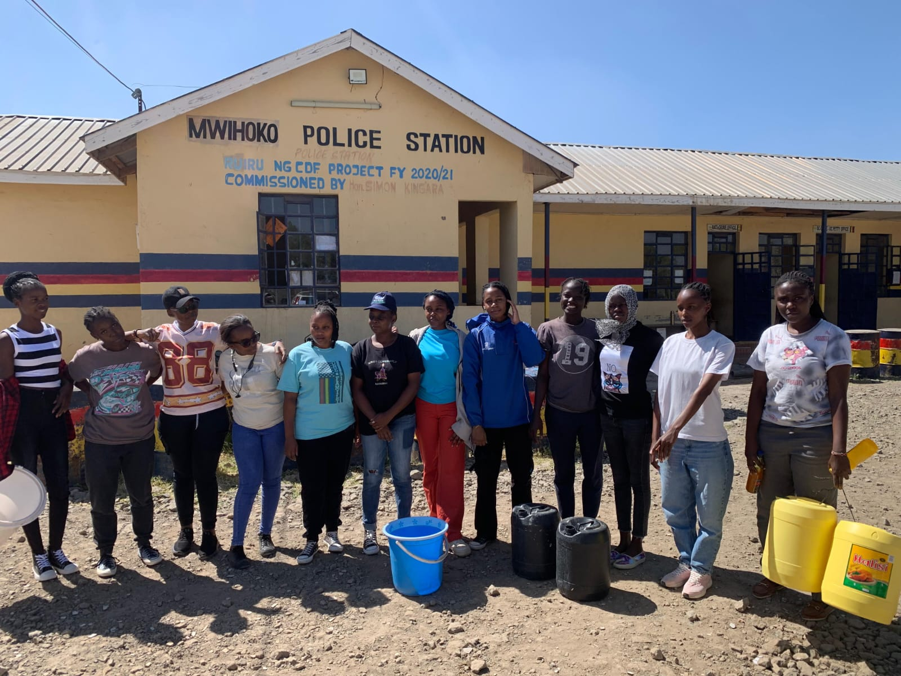

Programming
Python and writing application logic.
COMPUTER SCIENCE · ALWAYS LEARNING
I'm a Computer Science student exploring software development, cybersecurity, and the technology that makes a difference in the real world.
Curious mind. Practical projects. Continuous growth.

01 / EXPLORE MY WORLD
Curious about my work? Type a command below and explore my portfolio.
Welcome to Stacy's interactive terminal.
Type help to see the available commands.
Try: help · about · skills · projects · contact · clear
01 / A LITTLE ABOUT ME
I'm Stacy Macharia, a Computer Science student developing my skills through hands-on projects. I enjoy understanding how technology works and turning ideas into useful applications.
I'm especially interested in cybersecurity, but I'm also exploring other areas of computing. I'm keeping an open mind while learning, building, experimenting, and discovering where my strengths can make the biggest difference.
02 / MY TOOLKIT
My toolkit grows with every project and new concept I learn.
Python and writing application logic.
HTML, CSS, and building websites.
SQLite and storing application data.
VS Code, Git, and GitHub.
These are current areas of practice, not a claim of professional expertise.
BEYOND THE CODE
I am passionate about exploring technology, understanding digital security and developing solutions that make a difference. These are some of the areas I am interested in growing my skills.
Exploring ethical hacking, online safety and ways to protect digital systems.
AREA OF INTERESTLearning how networks communicate and how to identify security weaknesses.
AREA OF INTERESTBuilding practical applications that solve real-world problems.
AREA OF INTERESTInterested in understanding digital evidence and investigating cyber incidents.
AREA OF INTEREST03 / THE PROJECT LAB
A showcase of practical projects where I apply my programming knowledge, creativity and problem-solving skills.



A Python-based application that helps users report lost and found belongings, identify potential matches, submit claims and manage the recovery process.
My personal developer portfolio.
A personal website designed to showcase my technical skills, projects, certifications, professional experience and learning journey.
Explore my other public repositories. This gallery automatically loads projects from my GitHub account.
04 / WHAT'S NEXT
I'm exploring different areas of Computer Science while building a strong technical foundation.
Learning about digital security, safe computing, networks, and ethical security practices.
AREA OF INTERESTImproving my ability to design, build, test, and maintain useful applications.
BUILDING SKILLSExploring different computing fields and discovering what I want to specialize in.
EXPLORING05 / PROFESSIONAL DEVELOPMENT
Professional learning and certifications that reflect my commitment to developing technical skills.
CISCO NETWORKING ACADEMY
Successfully completed the Endpoint Security course through the Cisco Networking Academy program.
View Certificate ↗CYBERSECURITY
Successfully completed the Introduction to Cybersecurity course.
View Certificate ↗06 / MY JOURNEY
My professional exposure, academic projects and community involvement have helped me develop practical skills and a passion for technology.
INDUSTRIAL ATTACHMENT
January – April 2024
ACADEMIC EXPERIENCE
UNIVERSITY COMMUNITY SERVICE




05 / LET'S CONNECT
Interested in my work, have a project idea, or want to connect about technology? Find me on GitHub.
Find me on GitHub ↗Add your professional email here when you're ready.